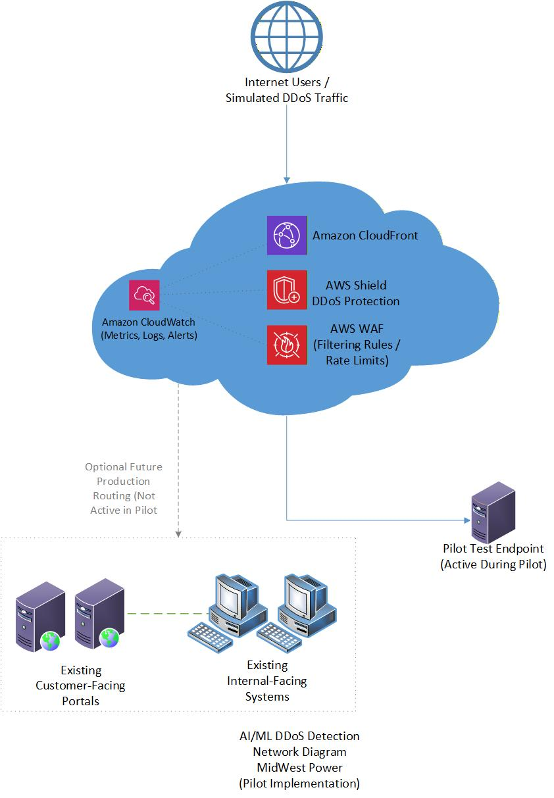

Project objective
Improve availability and customer trust by detecting and mitigating abnormal traffic before it reaches customer portals and internal-facing systems.
What I produced
- Designed an architecture using CloudFront, Shield, WAF, CloudWatch, IAM, and a controlled test endpoint.
- Defined functional, performance, user, and technical requirements.
- Created performance, security, legal, and business test cases.
- Developed a work breakdown structure, schedule, staffing plan, quality criteria, risk register, and budget.
- Established measurable pilot acceptance criteria for detection time, mitigation rate, latency, and legitimate-traffic availability.
Key decisions
- Run a proof of concept before any production-wide rollout.
- Place managed protection at the edge so existing applications do not need major changes.
- Use controlled simulated traffic and continuous monitoring to reduce test risk.
- Treat false positives, service disruption, and cost overrun as explicit project risks.
6-week pilotPlanning through closeout
85% mitigation goalInitial simulated DDoS target
<250 msMaximum planned added latency
Validation and analysis
- Targeted detection within about two minutes.
- Set an initial goal of mitigating at least 85% of simulated attack traffic.
- Required added latency below 250 milliseconds and legitimate traffic availability of at least 99%.
What I would improve next
- Use a dedicated isolated test environment and formal authorization for traffic generation.
- Add Infrastructure as Code and automated rollback.
- Include Shield Advanced cost and incident-response support comparisons.